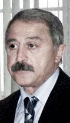

ЕСЛИ МЫ ДОЛЖНЫ СОТРУДНИЧАТЬ, ТО ТОЛЬКО ПО ЧЕСТНЫМ ПРАВИЛАМ
Интервью c президентом
Мингечевирского
ресурсного центра
прав человека
Джианшой Омаровым.
Правозащитные НПО, фактически являющиеся ровесниками наших государств, уже имеют свою историю и накопили определенный опыт как в сфере обучения правам человека, так и в сфере практической правозащиты. Как по Вашему, есть ли сегодня потребность анализа пройденного пути, выявления проблем и выработки новых подходов в деятельности правозащитных НПО? С какими проблемами и трудностями Вы сталкиваетесь в своей работе?
Переход постсоветских государств от тоталитарного режима к демократии проходил в той или иной мере одинаково и мы этому были свидетелями. Но вот процесс становления демократии, демократических принципов управления обществом, обучения правам человека, формирование механизмов правозащиты осуществлялся, да и осуществляется, совершенно по разному. И Вы правы. Наши государства накопили довольно таки большой опыт в сфере обучения правам человека и правозащитной деятельности. Здесь нельзя не отметить неоценимый вклад Московской школы прав человека во главе с Анатолием Азаровым. которая вырастила целую плеяду истинных правозащитников по всему постсоветскому пространству. Варшавская школа прав человека Марека Новицкого и его продолжателей в лице Адама Пырека и Дануты Пшевары взрастила тысячи правозащитников из стран содружества. Люди, которые прошли такую школу, ни в коей мере не могли остаться в стороне от общественных процессов и я уверен. что они активно включились в правозащитную , правообучающую сферу. В Азербайджане в данное время в области защиты прав человека и обучения правам человека активно функционируют свыше ста НПО. Также обстоит дело в Грузии, и как я убедился в этом, такая же картина в Армении да и в целом на Южном Кавказе. Я вполне согласен с тем, пора провести анализ пройденного пути деятельности правозащитников южнокавказского региона в плане выявления проблем и смещения центра в сторону выявления причин конфликтности наших обществ, дисбаланса во взаимоотношениях и выработки взаимоприемлемых подходов в устранении негативов. Как известно, сфера прав человека выше и вне сфер\ы того, что руководит и управляет нашими обществами. И политика, и экономика, и социальная сфера, и межгосударственные отношения должны строиться на основе общепризнанных принципов прав человека. Только таким образом можно прийти к толерантности, взаимотерпимости и взаимоуважению, уважению достоинства каждой личности, и посредством этого - к общежеланному миру. Наши "родные" правительства столько всего натворили, что нужны совместные, если не сказать многосторонние усилия, чтобы на Южном Кавказе восторжествовал мир. Это мой ответ на первую часть вопроса. А что касается проблем и трудностей в работе , то их тоже можно обобщить. Ментальность южнокавказских народов вцелом общая, мы мало чем отличаемся друг от друга. Амбициозность, неприятие ошибок, врожденное чувство высокомерия, чиновничье ханжество, коррумпированность эшелонов власти везде создает общие проблемы. К этому сегодня добавилась идея национального врага, "сверхнации", всеразвивающаяся ксенофобия , которые усугубляют проблемы общества. Но я оптимист и уверен, что время все вылечит, так было испокон веков.
Насколько деятельность, направленная на создание культуры демократии и защиты прав человека, учитывает специфику тех социальных групп, которым они предназначены?
Вопрос немного риторический, но думаю, что если мы говорим о культуре демократии и защите прав человека, то несомненно это должно учитывать всякую возможную специфику и в том числе специфику различных социальных групп. Тут речь может идти и о социальных меньшинствах, и о национальных меньшинствах. Базисную основу культуры демократии, прав человека составляет уважение достоинства человека как личности. Это конкретно выражено в статье первой Всеобщей Декларации Прав Человека. Но сегодняшняя действительность позволяет утверждать обратное. Порой в силу политического угодничества в демократическом обществе совершенно забывают о некоторых социальных прослойках, оправдывая это экономической нестабильностью. Я не хочу конкретизировать, но думаю, что вы со мной согласитесь, что расширяя эту тематику можно просто уйти в сторону или выйти за рамки контекста.
Насколько эффективно сотрудничают правозащитники наших стран и что мешает этому сотрудничеству?
Судя по сообщениям СМИ, а также исходя из личных контактов правозащитники наших стран заметно активизировали свою деятельность в плане сотрудничества. Я с глубоким уважением отношусь к работе Аваза Гасанова, который в составе международной рабочей группы стал посещать Армению, решая проблемы военнопленных и без вести пропавших, Арзу Абдуллаевой, сотрудничащей с видными правозащитными оргпанизациями Армении, Елдара Зейналова, Саиды Годжаманлы и ряда других видных представителей правозащитных НПО республики. Нельзя не отметить вклад писателя-публициста Сеймура Байджана, Алекпера Алиева, которые своим посещением Армении многократно обогатили складывающиеся отношения и сблизили представителей неправительственного сектора соседних стран. Мое двукратное посещение Армении в качестве правозащитника позволю себе нескромность внесло определенную лепту в дело налаживания сотрудничества. Я уверен, что взаимные поездки и тесное сотрудничество обоюдополезно. Но не надо из этого извлекать личную пользу и использовать это как орудие для достижения политической выгоды. Если помните, в мае 2005 года я был приглашен Аппаратом защитника прав человека (омбудсмена) Армении в Ереван для участия на международной конференции, посвященной проблемам борьбы с терроризмом в регионе. На второй день работы конференции было обьявлено о посещении участниками конференции памятника жертв геноцида армян. Я предполагал, что мое посещение мемориала будет потом растолковано как признание гражданином Азербайджана геноцида армян и я естественно отказался там быть. Потом как мне сказали, и я утвердился в своем убеждении, что против меня готовили провокацию, как спровацировали представителя «Йени фикир» Баширли. Я думал , что если мы должны сотрудничать, то только по честным правилам, хотя понимаю, что в политике очень редко играют по правилам. Я не хочу сказать, что это главное, что мешает нашему сотрудничеству. Здесь я могу отметить сложившиеся за период конфликта и после конфликтного «непонятного» времени стереотипа врага, недостаточность информации, боязнь быть обьектом постоянной критики, предателем своей страны. А ровным счетом нам ничего не мешает, даже наши государства проявляя безучастность способствуют нашему сближению. Было бы только желание. . .
Возможно ли сегодня, в условиях “замороженности” конфликта и отсутствии реальных продвижек в переговорном процессе, начинать процесс примирения между нашими народами? И как могут НПО участвовать в этом процессе.
Все мы были свидетелями того как в постсоветском пространстве нагнеталась истерия вражды между народами, которая переросла в вооруженные конфликты между Армений и Азербайджаном по поводу Карабаха, Молдавией и Россией по поводу Приднестровия, Ошские события , продолжающаяся чеченская война, южноосетинский , абхазский конфликты с Грузией, ферганские события в Узбекистане, жертвой которых стали турки-месхетинцы и список можно продолжать. Но стоит ли? И по прошествии времени официального разрешения конфликтной ситуации в той или иной стране не наступило. Но можно видеть, что главными участниками конфликтов, как ни пародоксально, являются государства и заинтересованные в этом до нельзя политизированные и коррумпированные круги. Если обратиться к к истории прошедших войн, народы воюющих государств, не дожидаясь официальных провозглашений шли на перемирие , братались, совместно налаживали мирную жизнь. Мы, живущие в конфликтной зоне люди, должны сами самостоятелно извлекать уроки из прошлого, отходить от взаимных обид, делать шаги навстречу. В этом смысле Кавказский Центр Миротворческих Инициатив является пионером, остается только вовлечь в этот процесс все более широкий круг заинтересованных людей, единомышленников, организации и в том числе неправительственные организации вне зависимости от профиля деятельности. А с философской точки зрения «замороженность» конфликта носит относительный характер. Если мы зравомыслящие люди- правозащитники, интеллигенция, деятели исскуств, литературы будем в стороне этим конфликт может разморозиться и еще дальше разъединит нас. А как могут НПО участвовать в этом процессе, то отвечу, надо вновь собраться в большом масштабе и наметить контуры этого процесса.
Как Вы думаете, важно ли сотрудничество азербайджанских НПО с неправительственным сектором Нагорного Карабаха и в каких областях это сотрудничество может быть более эффективным?
Скажу честно, сегодня мы азербайджанцы и армяне две противоборствующие стороны и яблоком раздора является Нагорный Карабах И исторически и в международных стандартах территориальная целостность Азербайджана воспринимается в границах существовавших до 1989 года, то есть НКАО неотделимая ее часть и лица, там проживающие, являются гражданами Азербайджана. Сколько бы мы ни говорили и не спорили на счет этого территорию и статус не возможно изменить. Исходя из этого и воспринимая существующее положение, не выступая с позиции победителя или побежденного можно налаживать отношения НПО Азербайджана, как на республиканском, так и на региональном уровне. Сфера сотрудничества может быть различной в зависимости от потребностей социальных слоев. Ведь основная цель неправительственных организаций построение гражданского общества. Трехстороннее сотрудничество – неправительственный сектор, государственный сектор и бизнес сектор позволит в ближайшем будущем поднять уровень культуры демократии, обеспечить защиту прав человека.
12-09-06
Правозащитные НПО, фактически являющиеся ровесниками наших государств, уже имеют свою историю и накопили определенный опыт как в сфере обучения правам человека, так и в сфере практической правозащиты. Как по Вашему, есть ли сегодня потребность анализа пройденного пути, выявления проблем и выработки новых подходов в деятельности правозащитных НПО? С какими проблемами и трудностями Вы сталкиваетесь в своей работе?
Переход постсоветских государств от тоталитарного режима к демократии проходил в той или иной мере одинаково и мы этому были свидетелями. Но вот процесс становления демократии, демократических принципов управления обществом, обучения правам человека, формирование механизмов правозащиты осуществлялся, да и осуществляется, совершенно по разному. И Вы правы. Наши государства накопили довольно таки большой опыт в сфере обучения правам человека и правозащитной деятельности. Здесь нельзя не отметить неоценимый вклад Московской школы прав человека во главе с Анатолием Азаровым. которая вырастила целую плеяду истинных правозащитников по всему постсоветскому пространству. Варшавская школа прав человека Марека Новицкого и его продолжателей в лице Адама Пырека и Дануты Пшевары взрастила тысячи правозащитников из стран содружества. Люди, которые прошли такую школу, ни в коей мере не могли остаться в стороне от общественных процессов и я уверен. что они активно включились в правозащитную , правообучающую сферу. В Азербайджане в данное время в области защиты прав человека и обучения правам человека активно функционируют свыше ста НПО. Также обстоит дело в Грузии, и как я убедился в этом, такая же картина в Армении да и в целом на Южном Кавказе. Я вполне согласен с тем, пора провести анализ пройденного пути деятельности правозащитников южнокавказского региона в плане выявления проблем и смещения центра в сторону выявления причин конфликтности наших обществ, дисбаланса во взаимоотношениях и выработки взаимоприемлемых подходов в устранении негативов. Как известно, сфера прав человека выше и вне сфер\ы того, что руководит и управляет нашими обществами. И политика, и экономика, и социальная сфера, и межгосударственные отношения должны строиться на основе общепризнанных принципов прав человека. Только таким образом можно прийти к толерантности, взаимотерпимости и взаимоуважению, уважению достоинства каждой личности, и посредством этого - к общежеланному миру. Наши "родные" правительства столько всего натворили, что нужны совместные, если не сказать многосторонние усилия, чтобы на Южном Кавказе восторжествовал мир. Это мой ответ на первую часть вопроса. А что касается проблем и трудностей в работе , то их тоже можно обобщить. Ментальность южнокавказских народов вцелом общая, мы мало чем отличаемся друг от друга. Амбициозность, неприятие ошибок, врожденное чувство высокомерия, чиновничье ханжество, коррумпированность эшелонов власти везде создает общие проблемы. К этому сегодня добавилась идея национального врага, "сверхнации", всеразвивающаяся ксенофобия , которые усугубляют проблемы общества. Но я оптимист и уверен, что время все вылечит, так было испокон веков.
Насколько деятельность, направленная на создание культуры демократии и защиты прав человека, учитывает специфику тех социальных групп, которым они предназначены?
Вопрос немного риторический, но думаю, что если мы говорим о культуре демократии и защите прав человека, то несомненно это должно учитывать всякую возможную специфику и в том числе специфику различных социальных групп. Тут речь может идти и о социальных меньшинствах, и о национальных меньшинствах. Базисную основу культуры демократии, прав человека составляет уважение достоинства человека как личности. Это конкретно выражено в статье первой Всеобщей Декларации Прав Человека. Но сегодняшняя действительность позволяет утверждать обратное. Порой в силу политического угодничества в демократическом обществе совершенно забывают о некоторых социальных прослойках, оправдывая это экономической нестабильностью. Я не хочу конкретизировать, но думаю, что вы со мной согласитесь, что расширяя эту тематику можно просто уйти в сторону или выйти за рамки контекста.
Насколько эффективно сотрудничают правозащитники наших стран и что мешает этому сотрудничеству?
Судя по сообщениям СМИ, а также исходя из личных контактов правозащитники наших стран заметно активизировали свою деятельность в плане сотрудничества. Я с глубоким уважением отношусь к работе Аваза Гасанова, который в составе международной рабочей группы стал посещать Армению, решая проблемы военнопленных и без вести пропавших, Арзу Абдуллаевой, сотрудничащей с видными правозащитными оргпанизациями Армении, Елдара Зейналова, Саиды Годжаманлы и ряда других видных представителей правозащитных НПО республики. Нельзя не отметить вклад писателя-публициста Сеймура Байджана, Алекпера Алиева, которые своим посещением Армении многократно обогатили складывающиеся отношения и сблизили представителей неправительственного сектора соседних стран. Мое двукратное посещение Армении в качестве правозащитника позволю себе нескромность внесло определенную лепту в дело налаживания сотрудничества. Я уверен, что взаимные поездки и тесное сотрудничество обоюдополезно. Но не надо из этого извлекать личную пользу и использовать это как орудие для достижения политической выгоды. Если помните, в мае 2005 года я был приглашен Аппаратом защитника прав человека (омбудсмена) Армении в Ереван для участия на международной конференции, посвященной проблемам борьбы с терроризмом в регионе. На второй день работы конференции было обьявлено о посещении участниками конференции памятника жертв геноцида армян. Я предполагал, что мое посещение мемориала будет потом растолковано как признание гражданином Азербайджана геноцида армян и я естественно отказался там быть. Потом как мне сказали, и я утвердился в своем убеждении, что против меня готовили провокацию, как спровацировали представителя «Йени фикир» Баширли. Я думал , что если мы должны сотрудничать, то только по честным правилам, хотя понимаю, что в политике очень редко играют по правилам. Я не хочу сказать, что это главное, что мешает нашему сотрудничеству. Здесь я могу отметить сложившиеся за период конфликта и после конфликтного «непонятного» времени стереотипа врага, недостаточность информации, боязнь быть обьектом постоянной критики, предателем своей страны. А ровным счетом нам ничего не мешает, даже наши государства проявляя безучастность способствуют нашему сближению. Было бы только желание. . .
Возможно ли сегодня, в условиях “замороженности” конфликта и отсутствии реальных продвижек в переговорном процессе, начинать процесс примирения между нашими народами? И как могут НПО участвовать в этом процессе.
Все мы были свидетелями того как в постсоветском пространстве нагнеталась истерия вражды между народами, которая переросла в вооруженные конфликты между Армений и Азербайджаном по поводу Карабаха, Молдавией и Россией по поводу Приднестровия, Ошские события , продолжающаяся чеченская война, южноосетинский , абхазский конфликты с Грузией, ферганские события в Узбекистане, жертвой которых стали турки-месхетинцы и список можно продолжать. Но стоит ли? И по прошествии времени официального разрешения конфликтной ситуации в той или иной стране не наступило. Но можно видеть, что главными участниками конфликтов, как ни пародоксально, являются государства и заинтересованные в этом до нельзя политизированные и коррумпированные круги. Если обратиться к к истории прошедших войн, народы воюющих государств, не дожидаясь официальных провозглашений шли на перемирие , братались, совместно налаживали мирную жизнь. Мы, живущие в конфликтной зоне люди, должны сами самостоятелно извлекать уроки из прошлого, отходить от взаимных обид, делать шаги навстречу. В этом смысле Кавказский Центр Миротворческих Инициатив является пионером, остается только вовлечь в этот процесс все более широкий круг заинтересованных людей, единомышленников, организации и в том числе неправительственные организации вне зависимости от профиля деятельности. А с философской точки зрения «замороженность» конфликта носит относительный характер. Если мы зравомыслящие люди- правозащитники, интеллигенция, деятели исскуств, литературы будем в стороне этим конфликт может разморозиться и еще дальше разъединит нас. А как могут НПО участвовать в этом процессе, то отвечу, надо вновь собраться в большом масштабе и наметить контуры этого процесса.
Как Вы думаете, важно ли сотрудничество азербайджанских НПО с неправительственным сектором Нагорного Карабаха и в каких областях это сотрудничество может быть более эффективным?
Скажу честно, сегодня мы азербайджанцы и армяне две противоборствующие стороны и яблоком раздора является Нагорный Карабах И исторически и в международных стандартах территориальная целостность Азербайджана воспринимается в границах существовавших до 1989 года, то есть НКАО неотделимая ее часть и лица, там проживающие, являются гражданами Азербайджана. Сколько бы мы ни говорили и не спорили на счет этого территорию и статус не возможно изменить. Исходя из этого и воспринимая существующее положение, не выступая с позиции победителя или побежденного можно налаживать отношения НПО Азербайджана, как на республиканском, так и на региональном уровне. Сфера сотрудничества может быть различной в зависимости от потребностей социальных слоев. Ведь основная цель неправительственных организаций построение гражданского общества. Трехстороннее сотрудничество – неправительственный сектор, государственный сектор и бизнес сектор позволит в ближайшем будущем поднять уровень культуры демократии, обеспечить защиту прав человека.
12-09-06